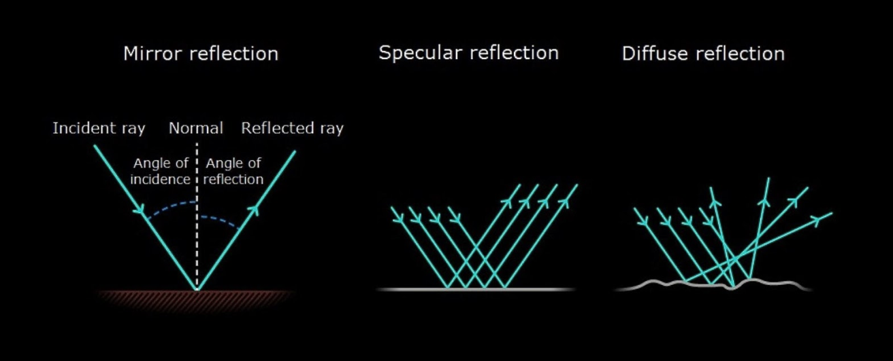

Reflection of light is the process by which light bounces off a surface instead of being absorbed or transmitted through it. It plays a fundamental role in how we see the world—most of what we perceive visually comes from light that has reflected off objects into our eyes.
Types of Reflection
- Regular (Specular) Reflection:
- Occurs on smooth, shiny surfaces like mirrors or calm water.
- Light rays bounce off at the sane angle, maintaining the image.
- Produces clear reflections, such as a mirror image.
- Diffuse Reflection:
- Happens on rough or matte surfaces, like paper or cloth.
- Light rays scatter in many directions.
- No clear image is formed, but the object is still visible.
Laws of Reflection
Reflection of light follows two basic laws:
- The angle of incidence is equal to the angle of reflection.
- Measured from the normal (a line perpendicular to the surface).
- The incident ray, reflected ray, and normal all lie in the same plane.

Written by Albert Marin